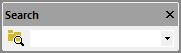

Mit den Schaltflächen der Symbolleiste Suchen können Sie eine Zeichenkette in mehreren Dateien suchen.
Die Schaltfläche In Dateien suchen öffnet den Dialog In Dateien suchen für die erweiterte Suche, während das Textfeld Suchen daneben für eine Schnellsuche verwendet werden kann.